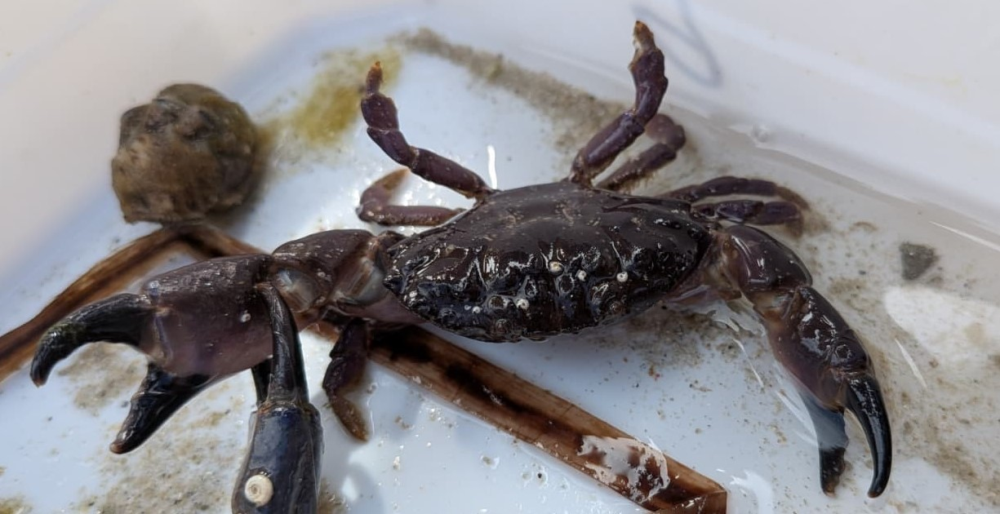
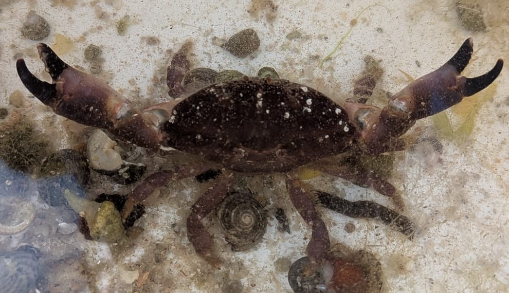

Crabe de pierre
Xantho hydrophilus
Le crabe de pierre est un crabe trapu et robuste des côtes rocheuses. Il passe une grande partie de son temps dissimulé sous les pierres ou dans les fissures du littoral.
Informations scientifiques
| Nom scientifique | Xantho hydrophilus |
|---|---|
| Nom commun | Crabe de pierre |
| Famille | Xanthidae |
| Infra-ordre | Brachyura |
| Ordre | Decapoda |
| Classe | Malacostraca |
| Habitat | Estran rocheux, sous les pierres et dans les crevasses du littoral (jusqu'à 40m). |
| Répartition | Côtes rocheuses de l'Atlantique Est et de la Méditerranée. |
| Longueur | Environ 3cm (manque de source) |
| Alimentation | Petits invertébrés, algues et matière organique. |
Description
Le crabe de pierre possède une carapace compacte et des pinces puissantes adaptées à son mode de vie sur les fonds rocheux. Sa coloration peut varier dans des tons brunâtres, jaunâtres ou verdâtres.
Il fréquente principalement l'estran rocheux et les zones où il peut trouver des abris. Son régime alimentaire est varié et comprend différents petits invertébrés ainsi que des matières végétales et organiques.
Comme plusieurs crabes de la famille des Xanthidae, il convient de ne pas le présenter comme une espèce destinée à la consommation.
Galerie

Crabe de pierre vu du dessus
Un Crabe de pierre vu du dessus, avec ses pinces écartés pour intimider.